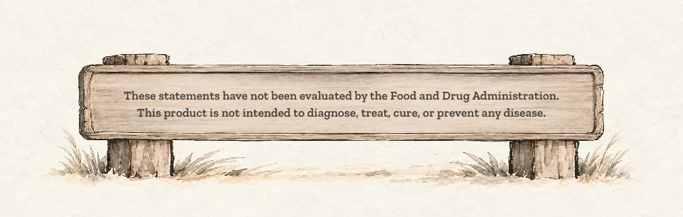
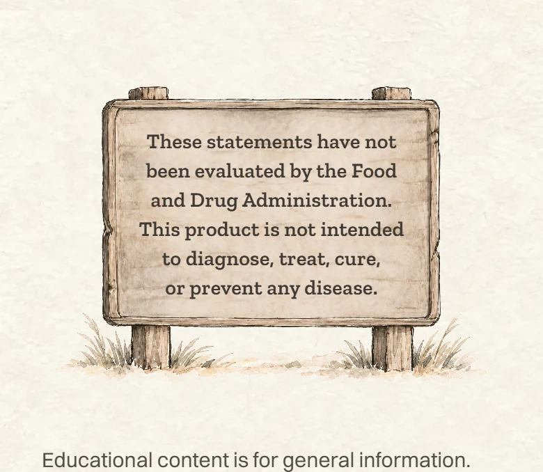
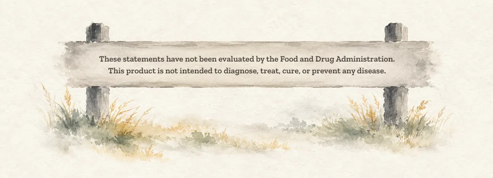
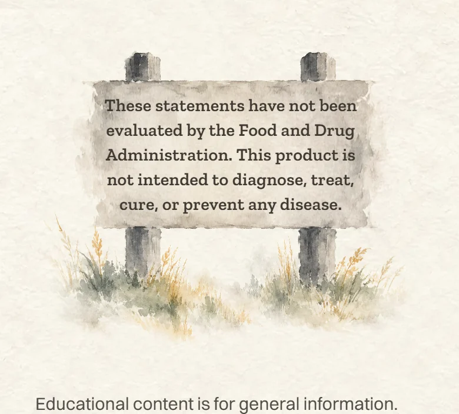
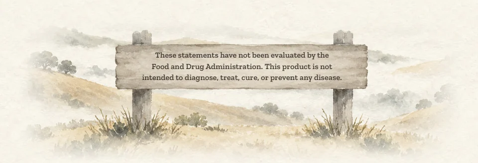
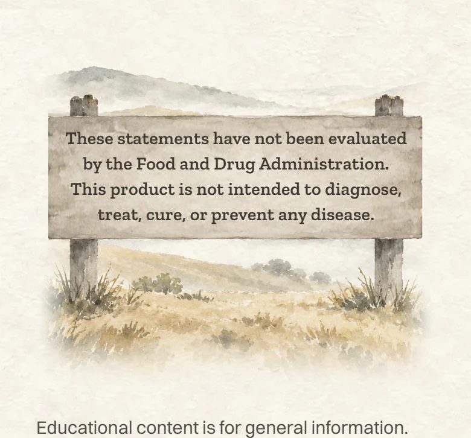
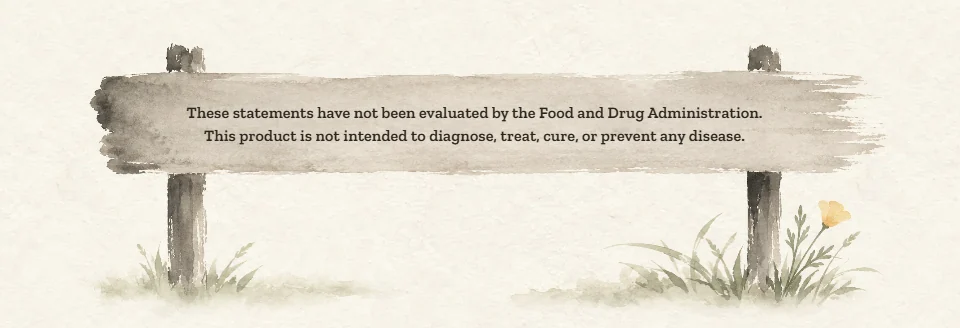
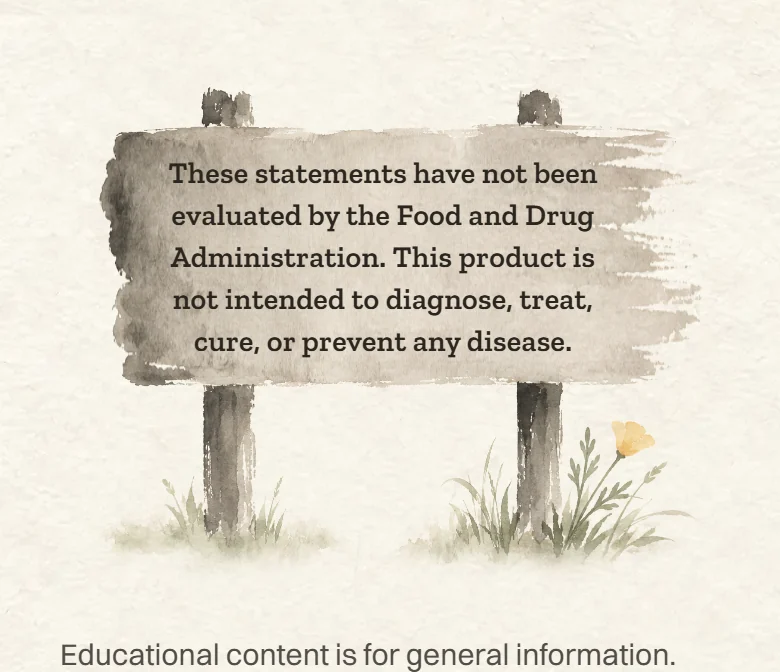

<title>FDA Sign Choices</title>
<meta name="claude:viewport-fit-sides" content="cover">
<link rel="preconnect" href="https://fonts.googleapis.com">
<link rel="preconnect" href="https://fonts.gstatic.com" crossorigin>
<link rel="stylesheet" href="https://fonts.googleapis.com/css2?family=Ysabeau:wght@500;600&family=Figtree:wght@400;500;600&display=swap">
<style>
  /* Layout: one column of paper "plates", each a choice: the computer view wide, the phone view beside it (stacked on phones).
     Single look on purpose: rice paper and sumi ink, the site's own world, so the screenshots sit on the paper they were made for. */
  :root {
    --paper: #f5f1e6;
    --plate: #fbf8ef;
    --ink: #1f1d1a;
    --ink-soft: #5b564d;
    --rule: #ddd5c3;
    --gold: #a8812f;
    --display: "Ysabeau", "Iowan Old Style", Georgia, serif;
    --body: "Figtree", "Segoe UI", system-ui, sans-serif;
    color-scheme: light;
  }
  body {
    background: var(--paper);
    color: var(--ink);
    font-family: var(--body);
    font-size: 17px;
    line-height: 1.5;
  }
  .wrap {
    max-width: 1080px;
    margin: 0 auto;
    padding-block: 40px 64px;
    padding-left: max(16px, env(safe-area-inset-left, 0px));
    padding-right: max(16px, env(safe-area-inset-right, 0px));
    display: grid;
    gap: 28px;
  }
  header { display: grid; gap: 8px; max-width: 62ch; }
  h1 {
    font-family: var(--display);
    font-weight: 600;
    font-size: clamp(34px, 6vw, 48px);
    line-height: 1.05;
    margin: 0;
    text-wrap: balance;
  }
  header p { margin: 0; color: var(--ink-soft); }
  .plate {
    background: var(--plate);
    border: 1px solid var(--rule);
    border-radius: 6px;
    padding: 20px;
    display: grid;
    gap: 14px;
  }
  .plate.pick { border-color: var(--gold); box-shadow: 0 0 0 1px var(--gold); }
  .head { display: flex; flex-wrap: wrap; align-items: baseline; gap: 6px 14px; }
  .letter {
    font-family: var(--display);
    font-weight: 600;
    font-size: 40px;
    line-height: 1;
    min-width: 1ch;
  }
  .name { font-family: var(--display); font-weight: 600; font-size: 26px; line-height: 1.15; margin: 0; }
  .score { font-weight: 600; font-variant-numeric: tabular-nums; color: var(--ink-soft); margin-left: auto; }
  .tag {
    font-size: 13px;
    font-weight: 600;
    letter-spacing: 0.06em;
    text-transform: uppercase;
    color: var(--gold);
  }
  .what { margin: 0; max-width: 62ch; }
  .back { margin: 0; color: var(--ink-soft); font-size: 15px; max-width: 62ch; }
  .views { display: grid; grid-template-columns: minmax(0, 2.4fr) minmax(0, 1fr); gap: 14px; align-items: start; }
  figure { margin: 0; display: grid; gap: 6px; min-width: 0; }
  figure img { display: block; width: 100%; height: auto; border-radius: 4px; border: 1px solid var(--rule); }
  figcaption { font-size: 13px; color: var(--ink-soft); }
  .now { opacity: 0.92; }
  .now .name { font-size: 22px; }
  footer { color: var(--ink-soft); font-size: 15px; max-width: 62ch; display: grid; gap: 6px; }
  footer p { margin: 0; }
  @media (max-width: 720px) {
    .views { grid-template-columns: minmax(0, 1fr); }
    .views figure.phone { max-width: 320px; }
    .plate { padding: 16px; }
  }
</style>

<main class="wrap">
  <header>
    <h1>FDA sign: three painted versions</h1>
    <p>Same words, three new paintings in the homepage's soft ink style. Each is shown in the real homepage footer, on a computer and on a phone.</p>
  </header>

  <section class="plate now" aria-labelledby="now-name">
    <div class="head">
      <h2 class="name" id="now-name">Now: the taupe sign</h2>
      <span class="score">for comparison</span>
    </div>
    <p class="back">Live on the Propolis page today. Pen outlines and wood grain give it a storybook look.</p>
    <div class="views">
      <figure><figcaption>Computer</figcaption></figure>
      <figure class="phone"><figcaption>Phone</figcaption></figure>
    </div>
  </section>

  <section class="plate" aria-labelledby="a-name">
    <div class="head">
      <span class="letter" aria-hidden="true">A</span>
      <h2 class="name" id="a-name">Ink-wash sign</h2>
      <span class="score">8 / 10</span>
    </div>
    <p class="what">The same trail sign, repainted soft and misty. No outlines. Sage and gold grass, like the homepage hills.</p>
    <p class="back">Holds it back: the posts are a little heavy, and the board is a plain grey slab.</p>
    <div class="views">
      <figure><figcaption>Computer</figcaption></figure>
      <figure class="phone"><figcaption>Phone</figcaption></figure>
    </div>
  </section>

  <section class="plate" aria-labelledby="b-name">
    <div class="head">
      <span class="letter" aria-hidden="true">B</span>
      <h2 class="name" id="b-name">Sign in the golden hills</h2>
      <span class="score">8 / 10</span>
    </div>
    <p class="what">The sign stands on a California hillside, with fog and oaks behind it. Colours toned down to stay calm.</p>
    <p class="back">Holds it back: it is the busiest. The words wrap to three lines on a computer, and every page gets a small landscape at the bottom.</p>
    <div class="views">
      <figure><figcaption>Computer</figcaption></figure>
      <figure class="phone"><figcaption>Phone</figcaption></figure>
    </div>
  </section>

  <section class="plate pick" aria-labelledby="c-name">
    <div class="head">
      <span class="letter" aria-hidden="true">C</span>
      <h2 class="name" id="c-name">Brushstroke sign</h2>
      <span class="tag">Recommended</span>
      <span class="score">8.5 / 10</span>
    </div>
    <p class="what">The board is one wide brushstroke, like an ink painter's quick sketch. One California poppy by the post. The most "painting" of the three.</p>
    <p class="back">Holds it back: the dark blot at the board's left end is a bit heavy. A second painting can soften it.</p>
    <div class="views">
      <figure><figcaption>Computer</figcaption></figure>
      <figure class="phone"><figcaption>Phone</figcaption></figure>
    </div>
  </section>

  <footer>
    <p>These are mockups. Only the sign picture was swapped on the live homepage to take the screenshots. Nothing on the site has changed.</p>
    <p>The words stay real text, so they can be selected and translated. All three pass the contrast check easily.</p>
  </footer>
</main>
